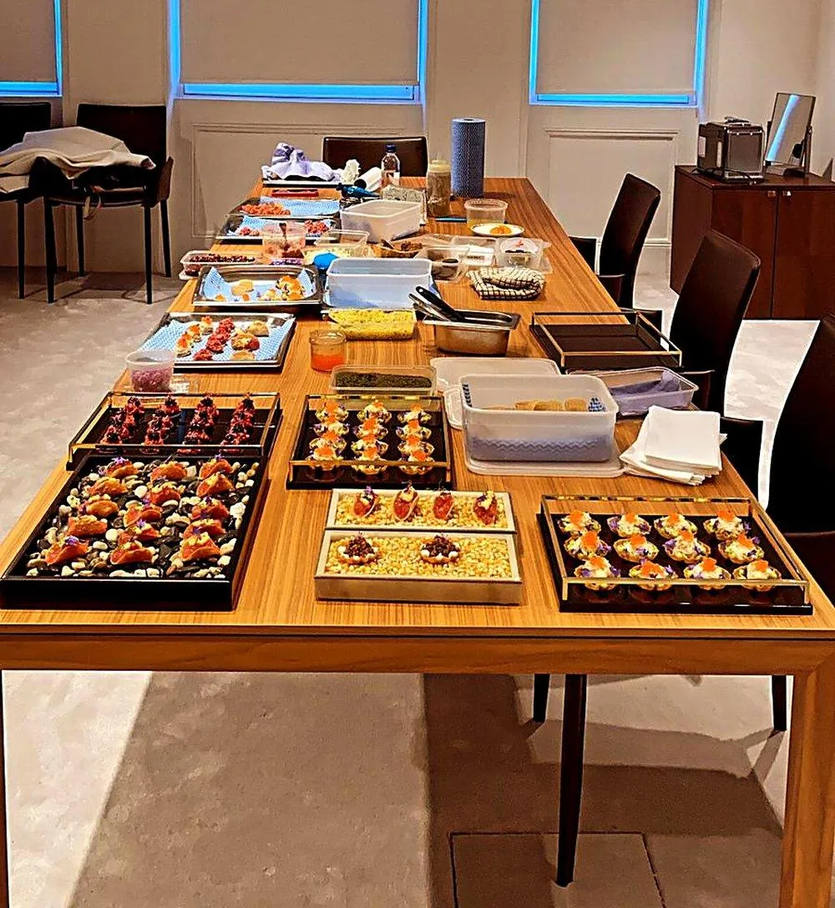

Private Chef for Corporate Events
Client dinners & corporate entertaining
Corporate entertaining that reflects well on your business — precise timing, genuine discretion, and food worth the occasion.

A corporate dinner carries a different kind of pressure to a private celebration — timing matters, discretion matters, and the food needs to support the evening's purpose rather than distract from it. Alejandro's corporate catering is planned with exactly this in mind, whether it's an intimate client dinner, an office celebration, or a larger reception tied to a company milestone.
What to expect
01What's included
Corporate bookings include a planning conversation covering your event's structure and timing, a menu built to work smoothly around any presentations or scheduled conversation, full catering and service staff, and the same discretion expected of any professional vendor working within a corporate setting.
02Timed around your event's structure
Course timing is planned around whatever your evening requires — a working dinner with a presentation partway through, a client entertaining evening with no fixed agenda, or a tightly scheduled event ahead of an evening call.
03From intimate client dinners to larger receptions
Corporate catering covers everything from a small, discreet client dinner for four to six guests through to a larger office celebration or reception, with the team and menu scaled appropriately.
04Dietary requirements across a mixed guest list
Corporate guest lists often include a wide and sometimes unpredictable range of dietary requirements across clients, colleagues and partners, and menus are planned with enough flexibility built in to handle this smoothly on the day, without last-minute scrambling or a guest left without a proper course.
05Billing, invoicing & repeat bookings
For companies that book regularly — client entertaining on a recurring basis, or a standing monthly team dinner — a simplified booking and invoicing process can be set up once, rather than renegotiated from scratch for every event.
06Venue flexibility — office, home or external space
Corporate events are catered equally well in a company's own office space, a private home used for client entertaining, or an external venue booked specifically for the occasion — the team adapts its setup to whichever location suits the event best, with site logistics confirmed in advance.
07Recurring team dinners & off-sites
Beyond client entertaining, this service is also well suited to recurring internal events — a monthly team dinner, a quarterly off-site, or an annual celebration — with menus varied across repeat bookings so a regular arrangement never starts to feel repetitive.
08Confirming headcount close to the event
Corporate guest numbers can shift close to the date as attendance is confirmed, and a reasonable amount of flexibility on final headcount is built into planning, with a firm number simply confirmed a short period before the event itself.
09A single contact for repeat business
Companies that book regularly are given a consistent point of contact for all future events, which keeps planning quick and straightforward for a repeat client rather than restarting the conversation from scratch each time.
10Confidentiality for sensitive business discussions
Where a dinner is tied to sensitive negotiations or an announcement not yet public, confidentiality is treated with the same seriousness as any other professional advisor in the room, with staff briefed accordingly ahead of the event.
11Matching the menu to the occasion
A working lunch, a client dinner and a company celebration each call for a different style of food. Alejandro Nicolau advises on menus that suit the tone of the occasion, from refined plated courses to elegant canapés that allow guests to network easily.
12Logistics on the day
The team coordinates access, setup and timings with your office or venue in advance, arrives early and works around your schedule. Service is discreet, and the space is left tidy once the event ends, so business can resume without disruption.
13Food that reflects your company
Corporate events work best when the food supports the purpose of the day. A client lunch needs polished, quiet service. A launch calls for canapés that are easy to eat while mingling. A team dinner can be more relaxed, with sharing plates. Menus are planned around the format and the audience, and presented professionally.
14Logistics, access and dietary needs
Corporate bookings involve venue access, set-up windows, health and safety, and a wide range of dietary requirements. These are planned in advance and communicated clearly, so the event runs on time. Staff are experienced in working in offices, showrooms and private venues, and leave the space clean and ready for the next day.
15Where we cook
Alejandro cooks in private homes and venues across London, including Canary Wharf, Mayfair, Marylebone, Knightsbridge, Kensington, Chelsea, Wandsworth, Richmond upon Thames. He also travels for events across the United Kingdom, including Surrey, Windsor, Henley-on-Thames, the Cotswolds, Oxford, Cambridge, Brighton, Bath, Edinburgh, Manchester. You can see every area on the locations page, or send your address and date through the enquiry form to confirm availability.
Private Chef for Corporate Events: FAQs
Can the menu and timing be planned around a working dinner with a presentation or meeting?
Yes. Alejandro Nicolau plans course timing around the structure of your event, including any presentations or scheduled business discussion.
Is discretion standard for corporate and client-facing events?
Yes. Alejandro Nicolau applies the professional discretion expected of a corporate vendor as standard to every corporate and client-facing booking.
Can bookings be made through a company account, with formal invoicing?
Yes. Alejandro Nicolau's team can work with a company's own booking and invoicing process where required.
What size of corporate event can be catered for?
Alejandro Nicolau caters for corporate events from an intimate client dinner for a handful of guests to a larger corporate reception, with staffing and menu scaled to match.
What clients say
- ★★★★★
“Alejandro was professional, the food was incredible, overall it made for an amazing evening! We tried some of the most amazing delicacies executed with such care, the mantao bread (to name one of many) was phenomenal.”
Emmie · 7 guests
- ★★★★★
“Perfect from start to finish. Alejandro provided an amazing menu initially and took my suggestions and requests onboard. He was engaging, supremely competent and made loads of excellent dishes. Everyone loved it.”
Daniel · 5 guests
- ★★★★★
“10/10! Food was amazing, top restaurant standard. Alejandro was very organised and helped our event run smoothly. Would certainly book him again.”
Lucy · 23 guests
- ★★★★★
“Excellent service from start to finish. We did nothing but sit at a beautifully laid table, eat delicious food and wave them goodbye after everything had been cleaned and cleared. They made our evening super special.”
Niki · 8 guests
- ★★★★★
“Alejandro was fantastic and provided delicious, high quality and beautifully presented food to make my sister's bachelorette incredibly special! A direct quote: 'Chef Alejandro was a slay'. Would definitely book him again!”
Becky · 16 guests
- ★★★★★
“The most delicious Spanish food. Alejandro is an incredible chef, and made the hen do so special. I would recommend Alejandro to anyone, he is a superstar!”
Francesca · 13 guests
- ★★★★★
“Alejandro was great with planning ahead of the event, arrived on time, made the most delicious food, and was very clean and tidy. His menus are also amazing, and as good as they sound.”
Bea · 14 guests
- ★★★★★
“We booked Chef Alejandro for my mother's 65th birthday dinner. He helped us create a vegetarian Asian fusion menu, and every dish was delicious with very generous portions. My mum was absolutely delighted.”
Georgina · 6 guests
- ★★★★★
“I booked Alejandro for my 40th birthday and it was perfect. I had gluten free and vegetarian guests which he catered to, with two beautifully cooked options per course. I'd also add his canapés for an extra special touch!”
Kat · 5 guests
- ★★★★★
“Alejandro catered for our intimate wedding, we consider ourselves 'foodies' and the food was a really important part of it and Alejandro absolutely delivered, from the canapés to dessert everything was amazing and I could not have asked for a better service or meal experience. Every single person emphasised how incredible the food was.”
Sophie · Wedding, 12 guests
- ★★★★★
“I can honestly say that this was the best BBQ ever hosted in our house. Alejandro and his team delivered beautifully cooked food and impeccable service. I had people coming over to me all afternoon and early night to say that they felt well looked after but also that the food was incredible!”
Marcela · BBQ, 30 guests
- ★★★★★
“Chef Alejandro and the bartender, Mihai, superseded our expectations. The canapés we ordered were incredible from the presentation to the taste. He served them himself on trays and explained each one to our guests, which made it more personal. Our event was truly elevated by their catering services.”
Agnes · Private event, 32 guests
- ★★★★★
“I had never used a private chef for an event before, but our experience with Chef Alejandro was brilliant. He arrived at the agreed time with everything he needed. The food was spectacular and gained a lot of wonderful comments from the guests.”
Kirby · Private dinner, 21 guests
- ★★★★★
“The whole experience was faultless! From curating the menu with Alejandro to Álvaro coming and cooking a fantastic meal. The food was outstanding and great quality, and he left the house so tidy. Highly recommend!”
Jessica · Private dinner, 17 guests
Verified reviews from real bookings via Yhangry · Read all reviews